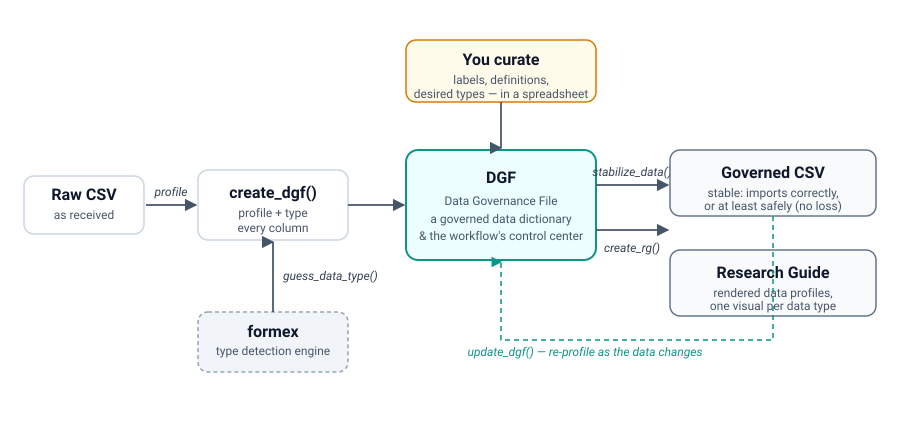

Rule-based data governance for the CSV world. Gooder data means gooder research.
datagoodr documents, types, and profiles research datasets — turning a bare CSV into a governed, self-describing data asset and a readable Research Guide.
The problem: ungoverned data corrupts science and analytics
A CSV carries no schema. Whether 47401 is a ZIP code, a county FIPS, or a count is invisible — so every tool that opens the file guesses, and they guess differently. A leading zero is dropped, a date is parsed in the wrong order, a coded category is averaged as if it were a number. These are not edge cases; they are the daily reality of applied research and organizational analytics, and they quietly corrupt findings long before anyone notices.
The discipline that prevents this — data governance: protecting, refining, and responsibly sharing data assets — has been a core concern of information systems for decades. But it has become urgent in statistics and the social sciences, where the creation and sharing of new data sources has grown exponentially while governance practice has not kept pace. The usual answer is an enterprise data-governance system: a heavyweight platform with complex schemas, unfamiliar data-type ontologies, and a price tag and staffing model that put it out of reach for most labs, analysts, and academics. Governance that demands all of that simply fails to meet most people where they are.
datagoodr is a feasible alternative. It is organized around familiar data types and CSV files — the default currency of the scientific world and organizational analysts — and around a single, legible artifact anyone can edit in a spreadsheet. Governance becomes a set of named rules attached to your data, not a platform you have to adopt.
How it works

At the center is the Data Governance File (DGF): a table with one row per variable that is both a governed data dictionary and the control center for the whole workflow. create_dgf() profiles every column and types it (using the formex detection engine); you curate the result in a spreadsheet — adding labels, definitions, and corrected types; and the DGF then drives two outputs:
-
a stabilized Governed CSV (
stabilize_data()) that imports to the correct type where possible, and safely — without data loss — where not; and -
a Research Guide (
create_rg()): a rendered data profile with a visual tuned to each column’s type.
As the data changes, update_dgf() re-profiles it while preserving everything you curated.
Acronyms. DGF = Data Governance File · RG = Research Guide.
Installation
# datagoodr depends on the formex detection engine
remotes::install_github("lecy/formex")
remotes::install_github("UrbanInstitute/datagoodr")Documentation
The user guide is being built out as a set of vignettes (Getting Started, the workflow, rule-based governance, stabilizing datasets, data profiling, research guides, and documentation). Start with Rule-Based Data Governance and Guessing Data Types in the Articles section of the package website, pending the full set.
Development plan and current state
datagoodr is under active development. The current cycle reintegrated the type-detection layer into formex and adopted formex’s v7 ontology, so datagoodr is now cleanly the workflow and formex is the engine.
Implemented
-
Detection extracted to formex. The ~80
is_*detectors, the ontology, andguess_data_type()now live in formex, which datagoodr imports. datagoodr keeps profiling, the DGF, review/override, stabilization, and rendering. -
A clearer rule vocabulary. Ingest rules were renamed
as_*→read_*(the name now states the format a rule reads), with deprecated shims. -
Dual-modality typing.
create_dgf()reads both of formex’s predictions (the ontology route and the legacy detectors) with a storage-safety gate that protects zero-padded keys (FIPS, ZIP, EIN) from being coerced to numbers. -
The v7 two-axis DGF. Each column carries a machine
guess_*leaf (format_style+unit_type), a human-editabledesired_*target form, and a suggestedstabilizer— aread :: [convert] :: writeplan — previewed instable_first5. -
Executable stabilization.
stabilize_data(use_v7 = TRUE)runs those plans to produce the governed CSV; legacy rules still take precedence. - Profiling + rendering. Universal quality metrics (distinct, missingness, zeros, infinities, duplication) plus type-specific profiles, rendered as a Research Guide with per-type visuals (histogram, treemap, calendar heat-map, boolean bar, word cloud).
In progress / planned
- The full user-guide vignette set (see
dev/vignette-user-guide-plan.md). - Porting the render engine off the legacy
desired_data_type/desired_data_classcolumns onto the v7 axes. - Additional profile metrics (e.g. entropy / categorical balance) under consideration.
Planning notes and design rationale live in dev/ (formex-reintegration-plan.md, schema-simplification-plan.md, v7-dgf-integration-plan.md).